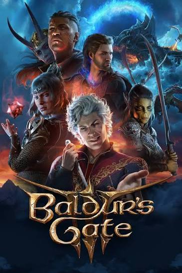
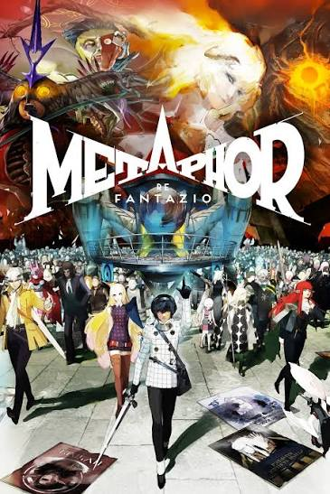
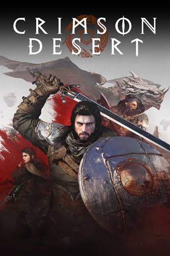
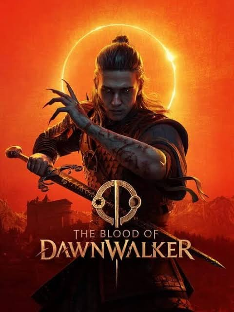
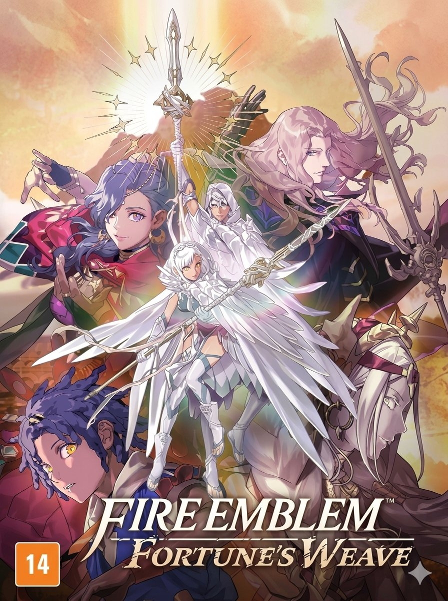

Os melhores RPGs da geração!!!
Saiba Mais!!!
Elden Ring

Ficha Técnica:
- Estilo do RPG: (ARPG) Combate de Ação Soulslike
- Desenvolvedora: FromSoftware
- Distribuidora: Bandai Namco Entertainment
- Data de Lançamento: 25 de fevereiro de 2022
- Metacritic: 96
- Principais Prêmios: Jogo do Ano (TGA) 2022
Baldurs Gate 3

Ficha Técnica:
- Estilo do RPG: (CRPG) Combate Tático
- Desenvolvedora: Larian Studios
- Distribuidora: Larian Studios
- Data de Lançamento: 03 de agosto de 2023
- Metacritic: 96
- Principais Prêmios: Jogo do Ano (TGA) 2023
Metaphor: ReFantazio

Ficha Técnica:
- Estilo do RPG: (JRPG) Combate por Turnos
- Desenvolvedora: Atlus
- Distribuidora: Sega
- Data de Lançamento: 11 de outubro de 2024
- Metacritic: 94
- Principais Prêmios: RPG do Ano (TGA) 2024
Principais RPGs lançados no ano:
Saiba Mais!!!
-
Crimson Desert

Um jogo de mundo aberto ambicioso desenvolvido pela Pearl Abyss que
esconde diversas mecânicas curiosas e detalhes que o jogo não explica
diretamente ao jogador.
-
The Blood of Dawnwalker

Apresenta um sistema dinâmico em que o protagonista Coen é humano de
dia e vampiro à noite, tendo um limite de 30 dias para salvar sua
família.
-
Fire Emblem: Fortune's Weave

Lançado em 17 de setembro de 2026 como um exclusivo do Nintendo
Switch 2, trazendo diversas curiosidades e inovações marcantes para
a franquia da Intelligent Systems.
Contato:
Qualquer dúvida, cadastre-se e mande sua mensagem,
reponderemos assim que possível.
Cadastro
Dê uma olhada nos nossos produtos:
Consoles, Games, Acessórios...
Loja